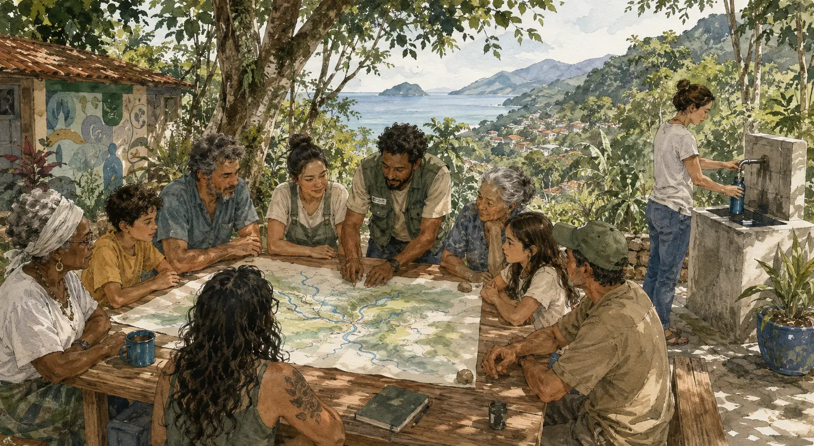
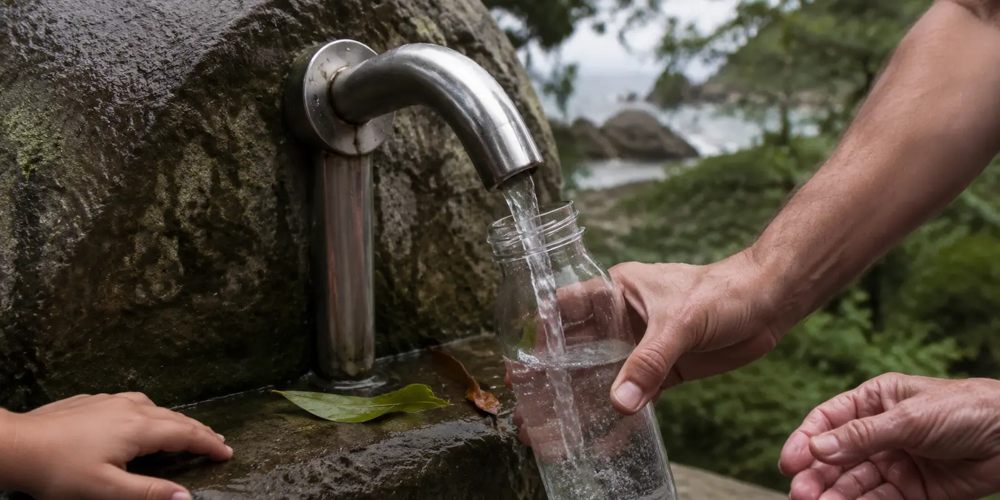

Antes do projeto, uma história • São Sebastião, da serra ao mar
Você já estava nesta história antes de saber o seu nome.
Chegue mais perto. Esta não é uma história sobre alguém distante. É sobre a água que encontrou o caminho até você — e sobre o momento em que você poderá escolher o caminho de volta até ela.
Quando a água ainda não tinha preço, ela já tinha presença.
Antes de você aprender a dizer “água”, a chuva já pousava na Serra do Mar. Descia devagar entre folhas, raízes e pedras, reaparecia em olhos d’água e procurava o oceano. Era assim muito antes de este lugar receber o nome de São Sebastião.
Naquela costa viviam povos Tupinambá, ao norte, e Tupiniquim, ao sul, tendo a Serra de Boiçucanga como uma fronteira natural registrada pela história. Seus mundos não eram iguais, e não seria justo inventar para eles uma única crença. Podemos guardar uma verdade mais simples: a água não era um produto esperando numa prateleira.
Ela participava da vida: caminho e limite, chuva e maré, pesca e plantio, alimento e risco, corpo e memória. Em muitos mundos indígenas, a humanidade é apenas uma entre as presenças do cosmos; viver exige atenção, reciprocidade e respeito por relações que não começam nem terminam em nós.
Imagine-se ali por um instante: não como dono da água, mas como alguém recebido por ela.
Capítulo 02 • A herança02
Você nasceu depois. Mas recebeu as escolhas de quem veio antes.
Vieram a colonização, as posses divididas, os caminhos abertos, as plantações, o porto, a estrada, as casas e o turismo. Séculos diferentes foram depositando decisões sobre o mesmo chão. Nenhuma delas explica tudo sozinha; juntas, mudaram a forma de habitar entre a montanha e o mar.
Talvez a sua família tenha chegado procurando trabalho, abrigo, liberdade ou uma vida melhor. Talvez esteja aqui há muitas gerações. Você não escolheu o começo desta mudança. Como todos nós, recebeu um território já transformado e aprendeu a viver dentro das respostas disponíveis.
Aprendemos a chamar de progresso aquilo que aproximava distâncias e facilitava a vida. E havia conquistas reais nisso. Mas, pouco a pouco, também aprendemos a olhar a floresta como fundo, o rio como obstáculo e a nascente como um detalhe escondido atrás da cidade.
Não foi uma ruptura anunciada. Foi uma distância que cresceu enquanto a vida seguia.
Capítulo 03 • O esquecimento03
Então a água desapareceu sem deixar de passar diante dos nossos olhos.
Você abriu a torneira e já não precisou perguntar de qual montanha a água vinha. Quando teve sede na rua, encontrou uma garrafa. Quando passou junto ao rio, talvez tenha ouvido alguém chamá-lo de vala, canal, problema, mau cheiro. A água continuava ali — mas já não parecia conversar com você.
A nascente ficou invisível; o destino do esgoto também. Entre uma coisa e outra, formou-se um hábito silencioso: acreditar que água segura sempre vem de algum lugar distante, tratada por alguém que não conhecemos, embalada por uma marca ou entregue por uma rede que só lembramos quando falha.
Isso não faz de você uma pessoa indiferente. A inconsciência também é produzida por sistemas que nos permitem viver sem ver o caminho inteiro. Ninguém consegue cuidar daquilo que foi treinado a não perceber.
O rio não morreu de uma vez. Primeiro, deixou de ser reconhecido como rio.
Capítulo 04 • O reencontro04
Até que uma pergunta pequena abre novamente o mundo.
Talvez uma criança pergunte de onde vem a água. Talvez uma chuva forte faça você lembrar que a montanha ainda está ali. Talvez, ao atravessar uma ponte, você perceba por um segundo o curso escondido sob a pressa. É assim que uma relação pode recomeçar: não com uma resposta pronta, mas com atenção.
Reencontrar a água não significa voltar a um passado idealizado, beber água bruta ou recusar a ciência. Significa trazer para o presente aquilo que não deveríamos ter perdido: o respeito de quem sabe que a vida depende de relações — agora acompanhado de saneamento, análise laboratorial, proteção da floresta, responsabilidade pública e informação aberta.
Talvez seja essa a forma contemporânea de reconhecer o sagrado: não transformar a água em símbolo vazio, mas tratar com cuidado real aquilo sem o qual nenhum corpo, comunidade, economia ou governo permanece.
A água nunca deixou de chegar. Quem pode voltar a encontrá-la é você — junto com os outros.
É aqui que você se torna personagem desta história.
Não como herói solitário que promete salvar um rio. Mas como alguém que deixa de passar adiante sem olhar. Alguém que pergunta, escuta, mede, ensina, organiza, cuida, decide ou abre espaço para que outras pessoas decidam juntas.
Talvez você governe. Talvez trabalhe numa escola, associação, comércio, laboratório, conselho ou serviço público. Talvez apenas conheça o som de uma bica que já não existe. Nenhuma dessas posições é pequena quando encontra as outras.
A próxima parte desta história dá um salto para o futuro. Ela imagina o que aconteceria se uma cidade inteira — e uma liderança capaz de reuni-la — decidisse fazer da água um legado.
Nota de respeito e método. Esta é uma narrativa literária cidadã, não um mito indígena e nem uma reconstrução de crenças Tupinambá ou Tupiniquim. A presença desses povos no território é documentada; as referências às cosmologias indígenas reconhecem sua diversidade, interdependência e elaboração própria, sem atribuir uma mesma espiritualidade a sociedades diferentes. [22][23]
Do passado recebido ao futuro que ainda podemos construir
A água é uma relação entre todos nós. É daqui que o futuro começa.
Agora que você entrou nesta história, a próxima cena salta para outubro de 2028. Não para prever uma eleição, mas para tornar visível uma possibilidade.
Você verá uma gestão reeleita porque a cidade passou a sentir os resultados de um programa histórico das águas. A cena é imaginada; os benefícios, os critérios e o caminho apresentado depois dela são concretos e verificáveis.
Ninguém realiza esse caminho sozinho. Quem governa pode dar prioridade, orçamento e continuidade. Servidores transformam intenção em rotina. Associações e comunidades guardam a memória do território. Coletivos ampliam a escuta. Escolas e universidades ajudam a conhecer. Empresas podem reduzir impactos e apoiar o comum sem capturá-lo. Moradores percebem mudanças que nenhum painel enxerga por si só.
O futuro eleitoral é apenas a porta. A história verdadeira começa quando cada pessoa encontra, com honestidade, a parte que pode assumir no presente.
MoradoresComunidades tradicionaisAssociaçõesColetivosConselhosEscolas e ciênciaServiço públicoComércio e turismoQuem governa
São Sebastião reelegeu a gestão que fez da água o seu maior legado.
Não foi uma obra isolada nem uma promessa de campanha. Foi uma política construída com uma rede de cuidado e encontrada todos os dias: no rio mais vivo, na garrafa que podia ser enchida, no laudo aberto e na sensação de que o território estava sendo cuidado.
Esta é uma ficção prospectiva. Não retrata pessoa, eleição, obra ou resultado real. A reeleição representa o reconhecimento público de uma política possível — nunca a apropriação individual de um trabalho coletivo.
Do futuro para o presente
Naquela noite, a explicação não cabia em um slogan.
Quando perguntavam por que a gestão havia sido reconduzida, moradores de bairros diferentes falavam de coisas diferentes — uma bica segura, um rio recuperado, uma conta doméstica menos pressionada, uma praia mais confiável. Todas eram partes da mesma decisão.
“O prefeito não foi reeleito porque falou sobre água. Foi reeleito porque a cidade passou a viver o resultado dessa escolha.”
Quatro anos antes, a proposta parecia grande demais para caber em um mandato. Era preciso mapear nascentes, integrar secretarias, rever prioridades, enfrentar lançamentos de esgoto, publicar dados ruins e instalar pontos de água somente quando fossem seguros.
A gestão decidiu não escolher entre saneamento estrutural e acesso público. Fez as duas coisas como partes de um mesmo caminho: nascente, rio, bairro, praia e copo. Cada etapa concluída tornava a próxima mais compreensível.
O município coordenou, mas não trabalhou sozinho. Conselhos ajudaram a vigiar critérios; associações trouxeram a memória das bicas e dos bairros; coletivos e escolas aproximaram o tema das pessoas; universidades qualificaram o método; trabalhadores e empreendimentos mudaram práticas que pressionavam os rios. A liderança política ganhou reconhecimento por ter reunido capacidades que já existiam e assumido aquilo que só o poder público poderia garantir.
Na eleição seguinte, o programa não precisava ser explicado do zero. Tinha endereço, rotina, indicadores e pessoas que o utilizavam. A campanha apenas deu nome a uma experiência que a população já conhecia — e cuja autoria permanecia distribuída pela cidade.
Realizações imaginadas para 2028 • resultados desejados, não fatos atuais
01 • Presença
A água ganhou endereço público.
Pontos gratuitos e monitorados passaram a fazer parte dos territórios costeiros viáveis. Cada um mostrava origem, último laudo, responsável técnico e condição de uso.
02 • Território
Os dez rios passaram a orientar a gestão.
As sub-bacias ganharam planos vivos, metas e responsáveis. O município deixou de olhar apenas quilômetros de rede e passou a acompanhar o caminho completo da água.
03 • Saneamento
A contaminação deixou de ser invisível.
O monitoramento nascente–mar revelou onde a qualidade se perdia. Ligações foram corrigidas, soluções locais qualificadas e cargas poluentes reduzidas com prioridade territorial.
04 • Cotidiano
A garrafa comercial deixou de ser a única resposta.
Moradores, trabalhadores e visitantes passaram a contar com uma alternativa pública segura, reduzindo dependência cotidiana de água embalada nos locais atendidos.
05 • Natureza
A Mata Atlântica entrou no orçamento como infraestrutura.
Nascentes, APPs e matas ciliares passaram a receber restauração e acompanhamento porque proteger a floresta também passou a ser entendido como proteger o abastecimento.
06 • Economia
O turismo ganhou uma identidade mais verdadeira.
Comércio, hospedagem e serviços puderam associar a experiência do litoral a rios cuidados, redução de descartáveis e informação ambiental verificável.
07 • Resiliência
A cidade ficou mais preparada para extremos.
Conhecer vazões, captações, fontes alternativas e riscos por microbacia melhorou a resposta a estiagens, chuvas intensas e picos sazonais.
08 • Confiança
Publicar a verdade virou força política.
O painel mostrava avanços, interrupções e não conformidades. A confiança cresceu não porque tudo parecia perfeito, mas porque a gestão mostrava o que sabia e como responderia.
O valor público — e também político — de uma escolha real
Por que a água sustentou aquele mandato?
Neste cenário, a reeleição não é prêmio por marketing. É a consequência possível de uma entrega percebida, distribuída pelo território e difícil de separar da vida diária. O reconhecimento de quem governa não apaga a autoria coletiva: ele nasce da capacidade de servi-la.
01 • Visibilidade
Uma entrega usada todos os dias.
O benefício não depende de cerimônia. Ele reaparece cada vez que alguém enche uma garrafa, acompanha um laudo ou percebe um rio cuidado.
02 • Capilaridade
Uma agenda que atravessa os bairros.
De norte a sul, cada sub-bacia recebe uma expressão local do mesmo compromisso. O projeto municipal ganha endereço comunitário.
03 • Convergência
Uma causa que amplia alianças.
Saúde, ambiente, turismo, educação, defesa civil e economia encontram interesse comum sem exigir que todos pensem da mesma maneira.
04 • Clareza
Uma história que qualquer pessoa compreende.
A água conecta serra, bairro, praia e corpo humano. O projeto é tecnicamente profundo e, ao mesmo tempo, fácil de reconhecer.
05 • Evidência
Uma realização que pode ser demonstrada.
Mapas, laudos, vazões, pontos ativos, carga evitada e orçamento formam uma prestação de contas que não depende apenas de narrativa.
06 • Legado
Uma política maior do que uma gestão.
Quando dados, ativos, orçamento e participação são protegidos por lei, a liderança pode ser lembrada por ter iniciado algo que continuou.
O poder continua sendo poder. Querer vencer uma eleição ou permanecer em um cargo não precisa ser negado. A pergunta mais importante é: qual projeto torna essa ambição útil para a cidade? Água Livre oferece uma resposta que pode ser medida no território e sentida na vida — desde que o mérito político venha do serviço prestado ao comum, e não da captura da causa.
Um convite a quem decide e a quem cuida
Esse poderia ser o seu mandato.
Talvez este material não tenha chegado no primeiro dia. Talvez algumas decisões já tenham sido tomadas e o tempo pareça curto. Ainda não é tarde.
A cena de 2028 não é uma garantia eleitoral. É uma forma de enxergar o que um poder bem utilizado pode produzir — e por que a população teria motivos concretos para desejar sua continuidade.
Se você chega aqui por uma associação, um conselho, uma escola, um coletivo, uma instituição de pesquisa, um empreendimento ou uma comunidade, esta também poderia ser a sua contribuição: ajudar a cidade a reconhecer melhor a água e a cuidar dela por mais tempo.
O que vem a seguir é o caminho de volta: o diagnóstico, os limites legais, as dez sub-bacias, o modelo de ponto público e um roteiro executável.
Agora • 20 minutos
Compreender o território.
Ler a tese, os dados e as lacunas sem compromisso prévio de concordar. O primeiro gesto é enxergar o problema inteiro.
Primeiros 30 dias
Reunir quem já cuida.
Convocar a mesa municipal das águas com equipes públicas, conselhos, associações, coletivos, comunidades, ciência e atividades econômicas; reunir as bases existentes e escolher três territórios para o diagnóstico inicial.
Primeiros 100 dias
Transformar intenção em método.
Publicar responsáveis, cronograma, orçamento inicial, plano de amostragem e critérios transparentes para os primeiros pontos-piloto.
Agora voltamos ao presente.São Sebastião • Agosto de 2026 • O caminho começa abaixo ↓
Dossiê cidadão • São Sebastião, SP • edição 08.08.2026
A água continua chegando.Podemos voltar a encontrá-la.
Este dossiê nasce de uma pergunta simples: como uma cidade cercada de Mata Atlântica, rios e nascentes pode transformar essa abundância em água segura, pública e próxima da vida cotidiana?
Um convite apartidário à comunidade, à gestão pública e às próximas gerações.
Uma imagem para abrir o olharA água não começa na torneira nem termina na praia. Ela percorre raízes, pedras, bairros, decisões públicas e gestos cotidianos. Cuidar da água é cuidar desse caminho inteiro. Ilustração simbólica, não documental.
01 — Uma história que podemos compreender juntos
Não houve um dia. Houve uma transição.
A leitura mais responsável dos documentos é: a perda do acesso direto e confiável se acelera nos anos 1970 e se consolida entre 1980 e 2000.
Essa história é maior do que qualquer governo ou geração. A cidade cresceu, recebeu estradas, porto, atividades econômicas, novas moradias e muitos visitantes. Muitas decisões responderam às urgências de seu tempo. Somadas, porém, elas alteraram o território entre a nascente e a praia mais depressa do que o saneamento e a proteção dos rios conseguiram acompanhar.
A antiga confiança na bica deu lugar a uma dúvida legítima: esta água ainda é segura? O caminho adiante não é romantizar água bruta. É proteger a microbacia, impedir a contaminação, aplicar o tratamento necessário e tornar cada laudo compreensível. Assim, segurança sanitária e acesso público deixam de ser opostos.
O ponto de partida é reconhecer o que já existe.
Há equipes públicas, comunidades, pesquisadores, operadores e moradores cuidando de partes desse percurso. A proposta é reuni-los em torno de uma visão comum, tornar visíveis as lacunas e oferecer a cada gestão a possibilidade concreta de deixar um legado maior do que uma obra isolada: rios vivos, informação confiável e água segura ao alcance das pessoas.
O que os dados mostram
O esgoto é a principal pressão sobre os rios urbanos
É a conclusão direta do Comitê de Bacias do Litoral Norte para 2024. Conhecer a causa ajuda a concentrar energia onde ela produz mais resultado. [1]
O que a história sugere
A mudança de escala se concentra após 1970
O crescimento populacional e urbano coincide com a abertura territorial e com um saneamento que não acompanhou o mesmo ritmo. [4]
O que podemos descobrir
Quando cada bica deixou de fazer parte da vida
Essa memória ainda vive nas pessoas. História oral, arquivos locais e antigos laudos podem completar aquilo que os indicadores não registraram.
02 — O que os números nos ajudam a enxergar
Olhar os dados também é uma forma de cuidado.
Números não substituem a experiência de quem vive o território. Eles permitem, porém, sair da impressão isolada e construir uma base comum para decidir. Os recortes abaixo — região hidrográfica, município e população sazonal — estão explicitados para que a comparação seja honesta.
Não se trata de diminuir o que já foi feito. Trata-se de reconhecer a distância entre os avanços existentes e a segurança que todas as pessoas ainda precisam experimentar no cotidiano.
<50%
dos efluentes gerados
eram coletados e tratados em São Sebastião, segundo a classificação do CBH-LN para 2024.
Indicadores diferentes podem contar partes verdadeiras da mesma história.
“Cobertura”, “atendimento”, “coleta”, “tratamento” e “redução de carga” usam denominadores distintos. Uma obra pode ampliar a área coberta antes que todas as casas estejam conectadas. Em vez de usar essa diferença para criar desconfiança, o programa propõe publicar fórmula, território, ano e população de cada indicador — para que governo e sociedade possam ler o mesmo mapa.
03 — A cidade mudou de escala
Uma transformação construída por muitas gerações.
Esta cronologia separa documentação, inferência e lacuna. Ela não procura julgar decisões antigas com a facilidade de quem olha o passado de longe. Procura entender como escolhas sucessivas produziram o presente — e como escolhas sucessivas também podem transformá-lo.
01
Antes de 1500
memória a aprofundar
Antes de ser infraestrutura, a água já era relação
Tupinambá e Tupiniquim ocupavam a costa antes da colonização portuguesa. A memória das águas começa antes dos arquivos municipais e merece ser reconstruída com escuta, consentimento e respeito às formas de conhecimento que permaneceram no território. [16]
02
Até meados do séc. XX
inferência histórica
A água fazia parte da geografia cotidiana
Comunidades caiçaras e pequenos núcleos usavam rios, bicas e nascentes próximos. Isso não prova que toda água era microbiologicamente segura, mas revela uma relação direta com o lugar — uma memória que pode orientar o futuro sem ser idealizada.
03
1938–1970
marco estrutural
Novas conexões trouxeram oportunidades — e outra escala de pressão
A conexão rodoviária, o Porto de São Sebastião e o complexo petrolífero ampliaram circulação, trabalho e integração regional. Ao mesmo tempo, o corredor Rio–Santos transformou antigos núcleos isolados em território turístico e imobiliário. Benefícios e custos passaram a compartilhar a mesma paisagem. [12][13]
04
1970–2000
resposta principal
O crescimento ultrapassa a capacidade de cuidado
São Sebastião cresce muito acima da média estadual; a urbanização se aproxima de 99%. Casas, vias e ocupações avançam, enquanto coleta e tratamento de esgoto não acompanham o mesmo ritmo. O problema atual nasce mais desse descompasso acumulado do que de uma decisão isolada. [4]
05
2007–2018
institucionalização
O problema vira obrigação de planejamento
A lei nacional exige universalização e controle social. São Sebastião institui seu Plano Municipal de Saneamento em 2013 e o revisa em 2018, reconhecendo déficits e metas. [2][7]
06
2019–2026
situação atual
Os avanços abrem caminho para uma etapa mais integrada
Novos contratos, sistemas e metas ampliam cobertura. Ainda assim, o relatório mais recente mantém São Sebastião em situação ruim para atendimento de água e esgotamento. A próxima etapa pode unir obra, restauração ecológica, acesso público e confiança nos dados. [1][5]
Uma leitura generosa do passado não diminui a urgência do presente. Ela cria melhores condições para que quem hoje ocupa um cargo público reconheça o que recebeu, valorize os avanços existentes e assuma a oportunidade histórica de conectar aquilo que ainda está separado.
Cada rio tem um nome. Cada território, uma história.
O relatório regional identifica dez sub-bacias em São Sebastião. Reconhecê-las pelo nome muda a escala da conversa: “a água do município” passa a ser o Rio São Francisco, o Rio Grande, Camburi, Juqueí, Una — lugares concretos onde pessoas podem observar, cuidar e sustentar a continuidade.
Um pacto municipal pode ser grande sem ser abstrato: dez planos de sub-bacia, construídos com quem vive cada bairro e conectados por uma mesma regra de transparência.
17 / norte
Rio São Francisco
Prioridade máxima para balanço hídrico, proteção e auditoria de captações.
70,77%pressão crítica
18 / centro
São Sebastião / Frade
Área urbana central; foco adicional em esgoto, drenagem e balneabilidade.
4,17%muito alta
19 / centro
Ribeirão Grande
Manancial relevante; proteger faixa ripária e qualidade da água bruta.
29,69%alta
20 / sul
Paúba
Inventário de nascentes e solução descentralizada para áreas isoladas.
7,66%muito alta
21 / sul
Rio Maresias
Pressão de quantidade e forte sazonalidade; prioridade de monitoramento.
46,07%média
22 / sul
Rio Grande / Boiçucanga
Recuperar o rio urbano como eixo público do bairro, da serra à praia.
7,20%muito alta
23 / sul
Rio Camburi
Conciliar abastecimento recente, proteção de nascentes e ocupação.
6,07%muito alta
24 / sul
Rio Barra do Sahy
Pressão média, vulnerabilidade social e memória do desastre de 2023.
44,11%média
25 / sul
Rio Juqueí
Acompanhar o crescimento, qualificar sistemas individuais e corrigir ligações irregulares.
18,15%muito alta
26 / sul
Rio Una
Integrar proteção do manancial, saneamento e qualidade costeira.
18,10%muito alta
O que esta porcentagem diz — e o que não diz
Ela mostra quanto da vazão mínima de referência (Q7,10) está comprometida por captações regularizadas: mede pressão de quantidade, não potabilidade. Disponibilidade “alta” não significa água limpa; situação “crítica” não significa rio seco. O mapa municipal precisa sobrepor quantidade, qualidade, fontes de contaminação e acesso social. Dados: CBH-LN 2025. [1]
05 — Política Municipal Nascente–Mar
Cuidar do caminho inteiro.
Água Livre, São Sebastião não propõe uma volta imprudente às bicas. Propõe um passo adiante: restauração de bacias, saneamento na fonte, potabilidade verificável e acesso gratuito, reunindo município, Estado, operador, universidades e comunidades.
Uma política que soma competências.
A água atravessa limites administrativos: nasce em uma área ambiental, cruza propriedades e vias, recebe influência do saneamento, encontra a saúde pública e chega ao mar. Nenhuma secretaria, comunidade ou concessionária resolve isso sozinha. A força do programa está em dar a todos um papel claro, dados comuns e uma mesa permanente de decisão.

Governar também é criar condições para escutarQuando o conhecimento técnico encontra a memória de quem vive o território, a decisão pública ganha precisão. A comunidade não substitui o Estado; ajuda o Estado a enxergar melhor. Ilustração simbólica, não documental.
01
Atlas vivo das águas
Mapear nascentes, olhos d’água, cursos, captações, APPs, lançamentos e pontos de uso.
Conhecimento caiçara e indígena com consentimento
Coordenadas sensíveis protegidas até a conservação
Dados públicos por microbacia
02
Diagnóstico nascente–mar
Amostras na cabeceira, trecho urbano e foz, em chuva e estiagem, para localizar onde a qualidade se perde.
E. coli, turbidez, cor, pH, nitrato e parâmetros locais
Laboratório acreditado e contraprova
Laudos com data, método e responsável
03
Esgoto tratado antes de encontrar o rio
Interceptar lançamentos, corrigir ligações, ampliar rede e adotar soluções locais onde a rede convencional for inadequada.
Fossa biodigestora é uma opção técnica em contextos apropriados
Inspeção, manutenção e destinação segura do lodo
Metas por carga orgânica, não só por extensão de rede
04
Restauração ecológica
Proteger o entorno das nascentes, recompor mata ciliar e estabilizar margens sem canalizar a vida do rio.
APP mínima de 50 m nas nascentes perenes
Compra, servidão ambiental ou acordo de conservação
Pagamento por serviços ambientais quando cabível
05
Rede de água pública
Ao menos um ponto seguro por território costeiro prioritário, instalado somente após viabilidade sanitária e fundiária.
Água gratuita no ponto de coleta
Tratamento compatível com o risco
Fechamento automático em não conformidade
06
Transparência que aproxima
Painel com qualidade, vazão, falhas, praias, obras e orçamento, mantendo séries consistentes e explicando mudanças de metodologia.
API e planilhas abertas
Alerta por QR code e placa física
Auditoria social e científica anual
07
Educação e memória
Cada rio ganha nome, história, guardiões comunitários e programa escolar.
Arquivo oral das antigas bicas
Ciência cidadã sem substituir laudo oficial
Mutirões de leitura do território
08
Mesa permanente das águas
Governança por bacias com Saúde, Meio Ambiente, Obras, Defesa Civil, Câmara, comunidades, operador e academia.
Metas anuais e orçamento definido
Decisões publicadas e conflitos de interesse declarados
Continuidade protegida por lei
06 — O padrão de um ponto Água Livre
Confiança se constrói gota a gota.
Um bebedouro público parece simples. Por trás dele existe uma cadeia de cuidado: território protegido, captação autorizada, tratamento, manutenção, vigilância e informação. Quando essa cadeia é visível, a pessoa não precisa escolher entre confiar cegamente e comprar água engarrafada.
“Gratuita” significa sem cobrança por litro no ponto. Não significa sem custo: a cidade escolhe financiar proteção, análise e manutenção porque reconhece a água segura como infraestrutura cotidiana — assim como uma praça, uma calçada ou uma escola.

O direito se torna real no gesto cotidianoUma criança, uma pessoa idosa, quem trabalha na rua ou chega da praia: todos deveriam poder encher a própria garrafa com segurança e saber quando, como e por quem aquela água foi analisada. Imagem simbólica, não registro de um ponto existente.
01Nascente protegida
02Captação autorizada
03Barreiras de tratamento
04Reservação segura
05Análise contínua
06Bebedouro gratuito
Modelo de placa pública
Água liberada para consumo
Ponto Boiçucanga 01
Rio Grande • amostra ilustrativa
Última análise
Hoje, 07:20
Próxima coleta
Em 24 horas
E. coli
Ausência
Turbidez
0,4 uT
Seis compromissos para merecer confiança
Responsável técnicoNome, registro e contato publicados.
SISAGUACadastro e rotina compatíveis com solução coletiva.
Plano de segurançaRiscos da bacia, barreiras e resposta a incidentes.
Desligamento físicoÁgua bloqueada se o padrão falhar ou houver chuva extrema.
AcessibilidadeAlturas, circulação, drenagem e uso inclusivo.
Bem comumNenhuma marca recebe exclusividade sobre a fonte ou os dados.
A frequência exata de amostragem e os parâmetros finais devem ser definidos pela autoridade de saúde conforme a Portaria GM/MS 888/2021, o risco local e o tipo de solução. [9]
07 — Direito, concessão e continuidade
Proteger o comum com responsabilidade.
A Lei 9.433/1997 declara a água bem de domínio público e reconhece valor econômico. Isso convive com outra verdade: captar, tratar, monitorar e distribuir exige infraestrutura, autorização, trabalho e financiamento. Distinguir o recurso natural do serviço prestado permite construir uma proposta juridicamente séria, sem reduzir um debate importante a simplificações. [6]
Base 01
Bem público, uso regulado
Recursos hídricos são públicos; usos sujeitos a outorga e cobrança continuam regulados. Em escassez, consumo humano e dessedentação animal têm prioridade.
A rede de pontos gratuitos como política permanente; ativos destinados ao uso comum; inventário e dados abertos; fonte orçamentária; conselho social; regra de substituição antes de fechar um ponto; audiência e lei específica para desativação.
O que depende de cooperação e limites legais
Acesso físico a nascentes privadas; padrões de potabilidade; autorizações de captação; competências estaduais ou federais; financiamento continuado da operação e da manutenção.
08 — Antipadrões e contrarrecomendações
Quando a parceria deixa de servir ao comum.
Empresas, fundações, universidades e investidores podem contribuir com tecnologia, recursos e capacidade de execução. A parceria se torna um problema quando o poder público perde controle, dados, capacidade de suspender o uso ou liberdade para garantir acesso à população.
Outorga é direito de uso. Não é propriedade sobre a água.
A Lei 9.433/1997 é direta: a outorga não aliena a água; concede apenas um direito de uso, sujeito a prazo, condições, prioridades coletivas e possibilidade de suspensão. Qualquer contrato municipal deve começar reconhecendo esse limite e jamais criar, por linguagem comercial, a aparência de que uma nascente ou vazão foi vendida. [6]
Antipadrão 01 • Exclusividade
Tratar a nascente como ativo privado.
Não fazerCeder exclusividade territorial, preferência permanente de captação ou linguagem que apresente fonte, rio ou vazão como patrimônio da empresa.
ContrarrecomendaçãoReconhecer o domínio público, preservar usos múltiplos e limitar qualquer autorização a finalidade, volume, prazo e condições expressas.
Antipadrão 02 • Volume garantido
Prometer água mesmo quando o território não puder entregar.
Não fazerFirmar volume mínimo garantido, cláusula equivalente a “retirar ou receber compensação”, ou prioridade empresarial que permaneça em estiagem e emergência.
ContrarrecomendaçãoPrever redução e suspensão automáticas conforme vazão, risco ambiental, calamidade e prioridade do consumo humano.
Antipadrão 03 • Apropriação simbólica
Trocar acesso público por domínio de marca.
Não fazerDar nome comercial a nascente, rio, bebedouro ou programa; permitir publicidade no momento de coleta; condicionar gratuidade a cadastro, aplicativo ou consumo.
ContrarrecomendaçãoManter identidade pública, comunicação educativa sem exclusividade e acesso anônimo e gratuito nos pontos municipais.
Antipadrão 04 • Caixa-preta
Privatizar o conhecimento sobre a água.
Não fazerAceitar laudo controlado apenas pelo interessado, painel proprietário, dado bruto inacessível ou sigilo genérico sobre vazão, qualidade, captação e incidentes.
ContrarrecomendaçãoExigir padrões abertos, dados primários públicos, laboratório independente, contraprova e histórico preservado mesmo após o fim do contrato. [17]
Antipadrão 05 • Irreversibilidade
Assinar um compromisso maior do que a capacidade de corrigir.
Não fazerCelebrar prazo longo sem revisão hidrológica, metas verificáveis, sanções, saída por interesse público, reversão de ativos e plano de encerramento.
ContrarrecomendaçãoUsar ciclos de revisão, gatilhos objetivos, garantias de execução e obrigação de devolver área, dados e infraestrutura em condição segura.
Antipadrão 06 • Custo público, ganho privado
Deixar a cidade recuperar aquilo que outro explora.
Não fazerSocializar restauração, monitoramento, segurança e dano ambiental enquanto o benefício econômico, os dados e a narrativa pertencem apenas ao parceiro.
ContrarrecomendaçãoDefinir responsabilidade integral, garantias financeiras, restauração proporcional, manutenção, seguro e benefícios verificáveis para a bacia e a comunidade.
Antipadrão 07 • Substituição
Confundir doação de garrafas com política de água.
Não fazerUsar distribuição emergencial, patrocínio ou compensação ambiental como substitutos permanentes de saneamento, proteção de bacias e rede pública de reabastecimento.
ContrarrecomendaçãoTratar apoio privado como complementar, com prazo e finalidade definidos, sem reduzir a obrigação municipal de construir acesso duradouro.
Antipadrão 08 • Captura territorial
Entregar o valor local sem reciprocidade.
Não fazerCeder coordenadas sensíveis, memória comunitária, conhecimento caiçara ou indígena, imagem do território ou oportunidade econômica com exclusividade e sem consentimento.
ContrarrecomendaçãoProteger conhecimentos, exigir consentimento quando aplicável, divulgar controladores e beneficiários finais e demonstrar retorno social, ambiental e econômico ao território.
Dez travas antes de qualquer assinatura.
Não são uma minuta jurídica pronta. São requisitos mínimos para estudo técnico, edital, convênio, concessão, patrocínio ou autorização que envolva nascentes, captação, monitoramento, pontos públicos, dados ou imagem das águas municipais. A Lei de Licitações exige planejamento, transparência, motivação e interesse público; a Lei de Acesso à Informação alcança contratos, metas e indicadores. [17][18]
01Natureza pública
Cláusula expressa de que não há venda, alienação ou propriedade privada da água, da nascente ou da vazão.
02Não exclusividade
Proibição de prioridade comercial, reserva territorial, direito de preferência ou bloqueio a outros usos compatíveis.
03Prioridade coletiva
Gatilhos automáticos de redução ou suspensão por escassez, contaminação, calamidade, proteção ecológica ou necessidade humana.
04Limites mensuráveis
Volume máximo, regime de retirada, medição aferível, balanço acumulado e publicação periódica do efetivamente utilizado.
05Dados do público
Dados primários, métodos, laudos, incidentes e séries históricas em formatos abertos, com contraprova independente.
06Acesso sem marca
Nenhum ponto público condicionado a publicidade, aplicativo, cadastro, compra, exclusividade de embalagem ou cessão de dados pessoais.
07Responsabilidade integral
Manutenção, restauração, seguro, garantia financeira, resposta a danos e custos de encerramento definidos antes do início.
08Revisão e saída
Revisões técnicas periódicas, sanções proporcionais, rescisão por interesse público e reversão de ativos sem dependência tecnológica.
09Transparência societária
Contrato, aditivos, cadeia de controle, beneficiários finais, conflitos de interesse, financiadores e subcontratados publicados.
10Reciprocidade territorial
Benefícios locais, capacitação pública, proteção de conhecimentos comunitários e indicadores sociais e ambientais verificáveis.
Sobre empresas estrangeiras: a nacionalidade do capital não substitui a análise do contrato. Uma empresa brasileira também pode capturar um bem comum; uma organização estrangeira pode cooperar sob regras públicas. O que não pode ser cedido é controle soberano, acesso social, dados, capacidade de fiscalização e retorno ao território. Em qualquer caso, controladores e beneficiários finais devem ser conhecidos e as obrigações precisam ser executáveis pelas autoridades competentes.
09 — Roteiro de execução
Começar pelo possível. Sustentar o essencial.
Uma política duradoura nasce quando a ambição encontra uma primeira ação realizável. O cronograma permite avançar sem inaugurar um bebedouro antes de tornar a água segura — e sem esperar que todos os problemas estejam resolvidos para começar.
Os primeiros 100 dias não precisam entregar uma obra. Precisam entregar uma base confiável: pessoas responsáveis, dados reunidos, método publicado, territórios-piloto e um orçamento inicial.
0–100 dias
Fundar e medir
Decreto do programa e grupo intersecretarial
Reunir bases existentes e contratos
Chamada pública de memórias das bicas
Plano amostral nas 10 sub-bacias
Publicar metodologia e orçamento
4–12 meses
Diagnosticar e pilotar
Campanhas seca e chuvosa
Escolher 3 bacias-piloto: norte, centro e sul
Auditar lançamentos e soluções individuais
Projetar 3 pontos seguros
Começar restauração prioritária
2027–2028
Escalar por território
Painel aberto nascente–mar
Rede progressiva de bebedouros
Programa municipal de sistemas locais
Interceptação e carga evitada por bacia
Educação hídrica em todas as escolas
Até 2029
Fixar como direito
10 planos de sub-bacia ativos
Ponto público seguro em cada território viável
Metas integradas à universalização
Auditoria externa anual
Lei anti-descontinuidade em vigor
Um compromisso que convida à autoria.
Gestão, Câmara, conselhos, associações, coletivos, instituições de ensino, comunidades e setores econômicos podem reconhecer a parte que lhes cabe, propor alternativas tecnicamente equivalentes ou aprimorar as metas. O objetivo não é reunir assinaturas simbólicas, mas articular uma responsabilidade pública com prazo, orçamento, participação e continuidade verificável.
Instituir o Programa Água Livre no primeiro ano.
Mapear as dez sub-bacias e publicar os dados.
Adotar meta de carga orgânica evitada por rio.
Financiar três pontos-piloto com monitoramento.
Não inaugurar ponto sem padrão de potabilidade.
Prever solução local regulada onde a rede não chegar.
Proteger dados, memória e participação comunitária.
Submeter resultados a auditoria anual independente.
10 — Uma mesa de perguntas para orientar decisões
Boas perguntas podem abrir um novo ciclo de cuidado público.
Estas perguntas formam uma pauta de trabalho. Governos podem transformá-las em prioridade e orçamento; organizações podem trazê-las para seus territórios; ciência e comunidades podem ajudar a respondê-las.
Quais nascentes já conhecemos e quais precisam ser identificadas e protegidas?
Em que trecho cada rio muda de qualidade — e o que os dados indicam como causa?
Quanto esgoto efetivamente deixa de chegar aos rios, medido em carga e não apenas em quilômetros de rede?
Quais comunidades ainda dependem de captações alternativas e como podemos torná-las seguras?
Como apresentar indicadores de cobertura e tratamento de forma simples, comparável e territorializada?
Qual orçamento anual pode ser dedicado à restauração das microbacias?
Quantos pontos públicos gratuitos e seguros são viáveis, em quais bairros e em que prazo?
Que protocolo de resposta protegerá a população quando um laudo falhar ou um ponto precisar de manutenção?
Este convite não tem um único destinatário. Ele se dirige a quem ocupa responsabilidades públicas hoje, a quem poderá ocupá-las amanhã e a quem sustenta o território entre uma eleição e outra. Cada pessoa ou instituição pode entrar por uma porta diferente; todas encontram a mesma necessidade de transparência, cooperação e continuidade.
11 — Uma constelação de responsabilidades
Ninguém recebe este convite apenas como destinatário.
A água atravessa funções, bairros e instituições. Por isso, participar não significa que todos façam a mesma coisa. Significa reconhecer capacidades diferentes e criar uma mesa em que cada contribuição encontre as outras.
São Sebastião não parte do zero. Conselhos ambientais, associações de bairro, coletivos, comunidades tradicionais, escolas, universidades, entidades profissionais, atividades econômicas, institutos e equipes públicas já cuidam de partes do território. Esta proposta não pretende falar por essas pessoas nem reuni-las sob uma marca. Pretende oferecer uma pergunta comum, um método verificável e espaço para que o conhecimento existente oriente a decisão pública. [19][20][21]
Quem mora e quem guarda memória
Perceber, contar e acompanhar.
Moradores e comunidades tradicionais conhecem mudanças de vazão, antigas bicas, cheiros, cores, enchentes, usos e conflitos que raramente aparecem em uma planilha. Sua participação precisa acontecer com escuta, consentimento e devolutiva.
Associações, coletivos e conselhos
Conectar o território à decisão.
Podem reunir vozes, registrar prioridades, acompanhar critérios, mediar diferenças e impedir que o programa perca continuidade. Não substituem o Estado nem precisam aderir sem crítica: ajudam a torná-lo mais atento e responsável.
Escolas, universidades e ciência
Transformar curiosidade em conhecimento.
Podem qualificar mapas, métodos, séries históricas e educação hídrica, sempre distinguindo ciência cidadã de laudo sanitário oficial. Conhecer melhor o rio também forma uma geração capaz de protegê-lo.
Servidores e instituições públicas
Fazer o cuidado durar todos os dias.
Equipes técnicas traduzem prioridades em licenças, análises, manutenção, fiscalização, contratos, dados e resposta a incidentes. Valorizar sua capacidade é o que transforma anúncio em política pública confiável.
Comércio, turismo e operadores
Reduzir pressões e apoiar sem capturar.
Empreendimentos podem corrigir impactos, reduzir descartáveis, compartilhar dados e financiar ações sob regras públicas. Apoiar o comum não dá direito de nomear, controlar ou reservar uma nascente, um ponto ou a narrativa do território.
Quem governa e quem legisla
Dar prioridade, recursos e continuidade.
Prefeitura, secretarias e Câmara podem integrar competências, abrir dados, garantir orçamento, instituir salvaguardas e responder publicamente pelos resultados. Seu papel é criar condições para que a rede coopere sem transferir a responsabilidade pública.
O primeiro passo não é concordar com tudo. É sentar à mesma mesa com honestidade.
Cada organização pode começar perguntando: que conhecimento já temos, que responsabilidade nos cabe, que limite precisamos declarar e quem ainda não está sendo ouvido? A partir daí, a proposta deixa de ser um documento enviado a muitos e pode se tornar um processo construído entre muitos — com coordenação pública, autoria compartilhada e compromissos verificáveis.
12 — Fontes, método e limites
Um dossiê aberto à verificação.
Priorizamos documentos oficiais, legislação e instituições técnicas. Onde não há série histórica suficiente, o texto identifica a conclusão como inferência ou pergunta de pesquisa. Transparência também significa mostrar aquilo que ainda precisa ser conhecido.
Não existe série contínua de potabilidade para todas as nascentes antes da urbanização.
Não é possível afirmar que toda água historicamente consumida era livre de risco microbiológico.
O inventário das dez sub-bacias não é um cadastro completo de nascentes ou bicas.
A implantação de cada ponto depende de estudos sanitário, ambiental, fundiário e de outorga.
Classificação anual de praia não substitui análise de água para beber.
“A água gratuita no ponto não é água sem valor. É água cujo valor foi assumido pela cidade.”
Talvez o maior legado de uma gestão não seja apenas aquilo que ela construiu, mas a capacidade que deixou para a cidade continuar cuidando. São Sebastião pode unir abundância natural, ciência, responsabilidade sanitária, memória territorial e presença comunitária — e oferecer às próximas gerações rios mais vivos e água segura mais perto de casa.
Este material não pede concordância imediata. Pede leitura, verificação, escuta e uma resposta à altura do território.
Água Livre, São Sebastião — Dossiê cidadão v3.4Para conversa pública, revisão técnica e construção institucional